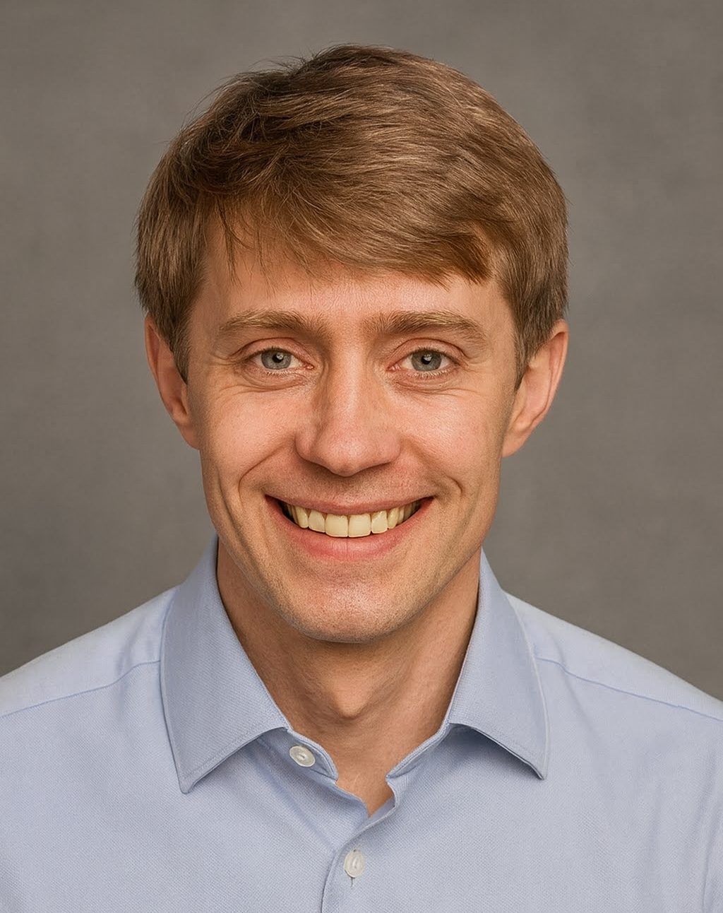

Curriculum Vitae
Søren Dalsgård Petersen
Updated
Personal Data
- Birthday
- August 26, 1990 (35 years old)
- Address
- Søltofts Plads, Building 223,
Room 229, Kgs. Lyngby - sorpet@dtu.dk

Research Profile and Vision: Data Science for Fungal Biotechnology
My research centers on data science and predictive modelling for fungal biotechnology and whole-cell biosolutions. I combine high-throughput experimentation, structured data capture, laboratory automation, and AI-assisted analysis to accelerate the discovery of useful microbial functions for agriculture, medicine, and biotechnology. With six years of wet lab experience followed by five years as a postdoc and my current role as Associate Professor at DTU Bioengineering, I focus on transforming the knowledge cycle—Design, Build, Test, Learn (DBTL)—into a scalable, efficient, and integrated process.
At the core of my approach is the development and deployment of Teemi (publication no 11), a digital tool I designed to streamline experimental planning and execution across DBTL stages. Teemi supports the unambiguous design and automated execution of protocols and enables structured experience capture and sharing. It integrates AI for hypothesis generation and evaluation, and supports programmatic robotic instructions, aligning closely with the strategic ambitions outlined in DTU Bioengineering’s 2026–2029 plan. The use of Teemi has already expanded to the Eukaryotic Molecular Cell Biology research group at the Section for Synthetic Biology, DTU Bioengineering, as well as to the Natural Products Genome Mining research group at The Novo Nordisk Foundation Center for Biosustainability at DTU (DTU Biosustain; publication no 14).
Since joining the Section for Synthetic Biology at DTU Bioengineering, I have focused on harnessing the potential of the IBT fungal strain collection for high-throughput screening of natural products and bio-based functions, particularly in the context of novel antimicrobials, biofungicides, and biofertilizers. This effort started in the larger initiative Smarter AgroBiological Screening (SABS), where Teemi played an integral role in structuring and executing systematic experimentation. Building on this foundation, I now contribute to the Initiative for Biofertilizer Innovation and Science (IBIS) and the funded RAPIDFUNG project, where structured data, automation, and predictive modelling connect fungal biodiversity to scalable biosolutions.
I have contributed to pathway engineering efforts aimed at enabling sustainable microbial production of medicinally relevant compounds. These include monoterpenoid indole alkaloids (MIAs) as part of the MIAMI project (publication nos 5 and 11), β-carotene (vitamin A precursor) biosynthesis (publication no. 2), and vitamin B1 (thiamine) production (publication no. 1).
Looking forward, I envision a research pipeline where AI-driven protocols (e.g., Teemi) are executed by robotic systems, supported by rich datasets from genome-sequenced isolates, functional assays, imaging, metabolomics, and partner data streams. These activities build on DTU’s investments in automation, AI, and high-throughput technologies and are designed to dovetail with initiatives like the DTU Arena for Life Science Automation (DALSA), IBIS, and RAPIDFUNG.
This vision of systematic fungal biosolution discovery is technically underpinned by tools I’ve developed, and strategically aligned with DTU Bioengineering’s mission to address planetary and human health challenges through mission-driven, interdisciplinary research.
Leadership
In my PhD project, I unified the different interests and coordinated the efforts of several collaborators across six nationalities spanning both academia and industry, ensuring that we achieved our goal (publication no 5). A particular challenge was securing effective local collaboration in San Francisco between the private company Teselagen and the research institution Joint BioEnergy Institute. I was responsible for the majority of communication between all partners, ensuring that differences in work cultures did not become obstacles and facilitating the integration of their diverse areas of expertise.
I have continued this coordinating role through my work with Teemi and around the IBT collection as part of the SABS project (Smarter AgroBiological Screening). In the SABS project, I developed the strategy for all activities related to data integration and predictive modelling, including defining data structures and training the team. Teemi protocols were developed for every workflow. Furthermore, I de facto coordinated the implementation of the strategy through daily interactions with the team.
As Associate Professor at DTU Bioengineering, I now lead data-science and modelling activities across IBIS and RAPIDFUNG. This includes defining shared data structures, establishing reproducible infrastructure for partner data, coordinating knowledge-sharing workflows, and building data-team capacity through hiring and onboarding of software engineering, data science, and research data stewardship roles.
Research applications and funding
Co-applicant in funded Innovation Fund Denmark Grand Solutions project: RAPIDFUNG Robotics and AI-Powered Identification of Fungal Solutions. Innovation Fund investment: DKK 18.1 million; total project budget: DKK 26.6 million.
Research stay at Lawrence Berkeley National Laboratory (LBNL), Berkeley, California, USA. Total received: DKK 84,500.
Conference International Synthetic and Systems Biology Summer School (SSBSS) at Taormina, Sicily, Italy. Total received: DKK 5,000.
Exchange stay at Eidgenössische Technische Hochschule Zürich (ETH), Zürich, Switzerland. Total received: DKK 55,000.
Exchange stay at University of Maryland (UMD), College Park, Maryland, USA. Total received: DKK 40,000.
Skills
General competencies within data science and microbiology. Some specific competencies:
Data Science
- Programming paradigms
- Functional Programming
- Languages and packages
- Python (NumPy, SciPy, Pandas, Matplotlib, Plotly, Scikit-learn), R (Tidyverse, dplyr, tidyr, purr, ggplot, tidymodels), SQL, BASH
- Software tools
- Git, GitHub, UNIX commands
- Databases
- Design, deployment, and maintenance of relational databases (PostgreSQL)
- Cloud providers
- Amazon Web Services (S3, RDBMS)
- Data science and modelling
- tidymodels, Scikit-learn, H2O (framework for e.g. deep learning), JBEI ART (Automated Recommendation Tool), Teselagen Evolve module
Microbiology
- Organisms
- S. cerevisiae, E. coli, and mammalian cells (CHO)
- S. cerevisiae techniques
- Cell culture, CRISPR-Cas9 genome editing, cell library construction
- Molecular biology
- Oligo libraries, USER cloning, Gibson assembly
- Assays
- Flow cytometry and cell sorting, Illumina NGS, Biosensors
Education
PhD in Biotechnology, Technical University of Denmark (DTU), Lyngby, Denmark
- Thesis: Methods for predictable and accelerated engineering of metabolism in eukaryotes. Supervisors: Dr. Michael Krogh Jensen and Prof. Jay D. Keasling
- Research stay at Lawrence Berkeley National Laboratory, California, USA (in collaboration with TeselaGen Biotechnology)
- Member of the Predictive and Accelerated Metabolic Engineering Network (PAcMEN)
- Affiliated with the Synthetic Biology Tools for Yeast group
MSc in Biotechnology, Technical University of Denmark (DTU), Lyngby, Denmark
- Honours Programme participant
- GPA: 11.4 (A according to the EU ECTS grading scale)
- Thesis: Engineering of thiamin synthesis in E. coli supported by synthetic selection. Supervisors: Prof. Morten Sommer and Hans Jasper Genee
- Exchange stay at ETH Zurich, Switzerland
- Affiliated with the Sommer Lab
BSc in Biotechnology, Technical University of Denmark (DTU), Lyngby, Denmark
- GPA: 11.1 (A)
- Thesis: In vivo system for selection of thiamine biocatalysts. Supervisors: Prof. Morten Sommer and Hans Jasper Genee
- Exchange stay at University of Maryland, USA
- Affiliated with the Sommer Lab
Sports Academy, Viborg, Denmark
Rysensteen Gymnasium (Upper Secondary School), Copenhagen, Denmark
Langelinieskolen (Primary and Lower Secondary School), Copenhagen, Denmark
Work/professional experience (exclusive teaching)
Associate Professor at DTU Bioengineering (Section for Synthetic Biology)
Research direction: data science and modelling of whole-cell biosolutions
Projects: Initiative for Biofertilizer Innovation and Science (IBIS) and RAPIDFUNG
Work: data infrastructure, predictive modelling, AI-assisted workflows, and scientific coordination
Main result: building reproducible data and modelling platforms for fungal biotechnology and biofertilizer discovery
Specialist and Special Consultant at DTU Bioengineering (Section for Synthetic Biology)
Project: Initiative for Biofertilizer Innovation and Science (IBIS)
Work: coordination of data science (incl. AI) and dissemination
Main result: data infrastructure and knowledge-sharing concepts for IBIS and DTU Bioengineering
Advisor at Mycoverse ApS
Work: Biological data solutions
Postdoc and Specialist at DTU Bioengineering (Section for Synthetic Biology)
Project: Smarter AgroBiological Screening (SABS)
Work: coordination of data science (incl. AI) and dissemination
Main result: data solutions for SABS, Bioengineering and Mycoverse ApS
Postdoc at DTU Biosustain (Group - Synthetic Biology Tools for Yeast)
Project: the refactoring Monoterpenoid Indole Alkaloid biosynthesis in Microbial cell factories (MIAMI)
Work: laboratory experimentation, data science (incl. AI) and dissemination
Main result: translation of protocols into code publication no. 11
Visiting researcher at Lawrence Berkeley National Lab (Group – Quantitative metabolic modeling in collaboration with TeselaGen Biotechnology San Francisco Data science group)
Work: collaboration on machine learning based statistical modeling
Main result: predictive models that are now part of a joint publication publication no. 5
Research assistant at DTU Biosustain (Group – Synthetic Biology Tools for Yeast)
Work: repurposing heterologous transcription factors as biosensors
Main result: creating library of up to 34 TF binding sites at 133 positions
Exchange student at "ETH Zürich " (Group - Experimental Systems Biology)
Work: investigating mechanisms initiating the cell cycle in C. crescentus
Main result: fluorescence labeling of investigated key proteins
Board member at Society for Biological Engineering at DTU (SBE)
Work: planning and executing activities. Responsible for company relations
Main result: student excursions to Novo Nordisk and Chr. Hansen. Co-organizer of the networking event Reach and Discover 2013
Military Service at DANILOG Vordingborg
Work: military education (“Hærens Basisuddannelse”)
Main result: passed with recommendation and promotion to private group leader
Academic Service and Professional Activities
Organizer of seminars at DTU Bioengineering, Section for Synthetic Biology
Work: coordination of the section seminar programme and speaker schedule
Representative for DTU Bioengineering in Data Science Hub at DTU
Work: cross-departmental coordination on data science, AI, and knowledge infrastructure
Representative for DTU Bioengineering in National Research Data Management
Work: research data management, FAIR data practices, and institutional data workflows
Teaching
Courses
Course development in the MSc course Development of biofertilizers (and other whole-cell biosolutions) at DTU Bioengineering.
Contribution: Draft course proposal and planning for a new MSc elective using IBIS data as examples
Lecturer and teaching assistant in the MSc course Synthetic Biology (# 27460) at DTU Bioengineering.
Contribution: Evaluation of exercises, lecturing, and examination (2024: 113 students; 2025: 140+ students)
Examiner in the MSc course Filamentous Fungi: Biology and Biotechnology (# 27419) at DTU Bioengineering.
Contribution: Oral examination and assessment covering fungal diseases, mycotoxins, antifungal treatment, fungal species identification, secondary metabolism, and fungal biotechnology
Lecturer in the MSc course Computer-aided cell factory design (# 27410) at DTU Bioengineering.
Contribution: Lecturing
Teaching assistant in the PhD course Introduction to Python for Data Analysis and Automation in Biology (# 29905) at DTU Biosustain.
Contribution: Evaluation of exercises
Teacher in the PhD course Genome editing for cell factories (# 29902) at DTU Biosustain.
Contribution: Designing and evaluating laboratory exercises, lecturing, and examination
Student Supervision
Examiner for special course for Tobias Svenning Mogensen at DTU Bioengineering
Project: Investigating synthetic signal peptides in R. toruloides and E. viscosa (Grade: passed; ECTS: 10)
Co-supervisor for PhD student Lucas Levassor at DTU Bioengineering
Project: Literate programming of biology
Co-supervisor of the special course of Jonathan Funk at DTU Bioengineering
Project: System for recommendation of IBT collection candidates to be screened for antimicrobial activity (Grade: 12; ECTS: 10)
Co-supervisor of the BSc thesis of Nojus Mickus at DTU Bioengineering
Project: Development and analysis of a graph database of the IBT Culture Collection of Fungi (Grade: 12; ECTS: 15)
Co-supervisor of the MSc thesis of Lucas Levassor at DTU Biosustain
Project: IT tools for accelerated genome engineering by library construction in yeast (Grade: 12; ECTS: 30)
Co-supervisor of the MSc thesis of Christine Møller Pedersen at DTU Biosustain
Project: Accelerated forward engineering of metabolic pathways supported by IT including machine learning: an example with strictosidine production in yeast (Grade: 12; ECTS: 30)
Other communication activities
National and international peer reviewed conference contributions (presenters are underscored)
Poster: Jensen, N. B., Krishnan, P., Christiansen, J. V., Møller, V. K., Petersen, S. D., Corcoles, D. L., Brems, A. R., Brewer, S. S., Steinert, K, Accelerated biofungicide discovery using automated screening of fungal biodiversity. Plant Biologicals Network Symposium, Copenhagen University, Plant Science, Copenhagen, DK.
Poster: Christiansen, J. V., Krishnan, P., Møller, V. K., Petersen, S. D., Corcoles, D. L., Brems, A. R., Brewer, S. S., Brunshøj, R. J., Ramal, B. C., Chantzis, E., Cachapa, J., Behrendt, R. A., Subko, K., Phippen, C. B. C., Liebmann, B., Jelsbak, L., Frandsen, R., Hoof, J. B., Frisvad, J. C., Jensen, N. B, Accelerated biofungicide discovery using automated screening of fungal biodiversity. Plant Biologicals Network Symposium, Copenhagen University, Plant Science, Copenhagen, DK.
Poster: Krishnan, P., Christiansen, J. V., Møller, V. K., Petersen, S. D., Corcoles, D. L., Brems, A. R., Brewer, S. S., Brunshøj, R. J., Ramal, B. C., Chantzis, E., Cachapa, J., Behrendt, R. A., Subko, K., Phippen, C. B. C., Liebmann, B., Jelsbak, L., Frandsen, R., Hoof, J. B., Frisvad, J. C., Jensen, N. B, Modernizing high throughput mycology with robotics and artificial intelligence. Fungal Research Symposium, Copenhagen University, Copenhagen, DK.
Poster: Pittroff, S. M., Wiebach, V., Møller, V. K., Petersen, S. D., Ramal, B. C., Chantzis, E., Subko, K., Sakuragi, Y, University X Industry: A new paradigm for screening large collections of microorganisms for development of the next generation crop protection biologicals. Plant Biologicals Network Symposium, Copenhagen University, Plant Science, Copenhagen, DK.
Oral: Petersen, C.T., Petersen, S.D, Forudsigelse af kerneudbytter i vårbyg i et langsigtet pakningsforsøg. The National Plant Congress (“Planter i fokus”), Web based.
Poster and oral: Petersen, S. D., Zhang, J., Grau, L. M., Kildegaard, H. F., Jakociunas, T., Keasling, J. D., Jensen, M. K, Engineering of the translation initiation site for predictable tuning of protein activity in eukaryotes. SuPER PAcMEN, RWTH Aachen, Germany.
Poster and oral: Petersen, S. D., Zhang, J., Grau, L. M., Kildegaard, H. F., Jakociunas, T., Keasling, J. D., Jensen, M. K, Engineering of the translation initiation site for predictable tuning of protein activity in eukaryotes. WiSe PAcMEN, EPFL, Lausanne, Switzerland.
Poster: Petersen, S. D., Genee, H. J., Gronenberg, L. S., Salomonsen, B., Sommer, M. O. A, Engineering of the thiamin synthesis in E. coli. SSBSS 2015: Biology Meets Engineering and Computer Science, Taormina, Sicily, Italy.
International workshop contributions (presenters are underscored)
Oral: Petersen, S.D, Introduction to Molecular Cloning. Nordic IGEM BioBrick Workshop, DTU, Denmark.
In addition to the above-mentioned communication activities, I have regularly presented at internal seminars at the Section for Synthetic Biology, DTU; the Novo Nordisk Foundation Center for Biosustainability, DTU; and the Joint BioEnergy Institute, San Francisco.
Publication summary
- Peer-reviewed journal publications: 10 (4 as first author; 1 as last author)
- No. 5 in the list below has 347 citations (I have shared first-authorship with Dr. Zhang)
- H-index = 7 (Google Scholar profile/Jun 2026).
- Total citations: 564 (Google Scholar profile/Jun 2026)
- ORCID ID: 0000-0003-4104-5144
Publications
Peer-reviewed
- Petersen SD, Frandsen RJN, Frisvad JC, Hoof JB (2025). Fungal Strains in the IBT Culture Collection. In preparation.
- Petersen SD, Corcoles DL, Møller VK, Krishnan P, Pittroff SM, Hoof JB, Frandsen RJN (2025). Automated High-Throughput Taxonomic Classification of Fungal Isolates. In preparation.
- Petersen SD, Corcoles DL, Christiansen JV, Brems AR, Møller VK, Krishnan P, Steinart K, Brewer SS, Brunshøj RJ, Pittroff SM, Frisvad JC, Sonnenschein N, Petersen S, Mansourvar M, Ding L, Jensen NB, Jelsbak L, Hoof JB, Frandsen RJN (2025). Identification of Fungal Biocontrol Organisms against Fusarium Head Blight in the IBT Collection Using a High-Throughput Screening Platform. In preparation.
- Levassor L, Whitford CM, Petersen SD, Blin K, Weber T, Frandsen RJN (2025). StreptoCAD: An Open-Source Software Toolbox Automating Genome Engineering Workflows in Streptomycetes. ACS Synthetic Biology, 14(11), 4355–4372.
- Mansourvar M, Funk J, Petersen SD, Tavakoli S, Hoof JB, Corcoles DL, Pittroff SM, Jelsbak L, Jensen NB, Ding L, Frandsen RJN (2024). Automatic Classification of Fungal-Fungal Interactions Using Deep Leaning Models. Computational and Structural Biotechnology Journal.
- Petersen SD, Levassor L, Pedersen CM, Madsen J, Hansen LG, Zhang J, Haidar AK, Frandsen RJN, Keasling JD, Weber T, Sonnenschein N, Jensen MK (2024). Teemi: An Open-Source Literate Programming Approach for Iterative Design-Build-Test-Learn Cycles in Bioengineering. PLOS Computational Biology.
- Pittroff SM, Brems AR, Brunshøj RJ, Christiansen JV, Melgaard E, Hansen ML, Llorente Corcoles D, Funk J, Møller VK, Petersen SD, Frandsen RJN, Jensen NB, Jelsbak L (2024). Novel Rapid Screening Assay to Incorporate Complexity and Increase Throughput in Early-Stage Plant Biological Testing. Rhizosphere.
- Abildgaard AB, Voutsinos V, Petersen SD, Larsen FB, Kampmeyer C, Johansson KE, Stein A, Ravid T, Andréasson C, Jensen MK, Lindorff-Larsen K, Hartmann-Petersen R (2023). HSP70-binding Motifs Function as Protein Quality Control Degrons. Cellular and Molecular Life Sciences.
- Petersen CT, Langgaard MK, Petersen SD (2023). Yield Prediction in Spring Barley from Spectral Reflectance and Weather Data Using Machine Learning. Soil Use and Management.
- Petersen CT, Petersen SD (2021). Jordpakning: Særlige Undersøgelser i Taastrup. I: Jon Birger Pedersen (Red.), Landsforsøgene 2021. Forsøg Og Undersøgelser i Dansk Landbrugsrådgivning. Landbrug og Fødevarer (SEGES), s. 279–289.
- Petersen CT, Petersen SD, Munkholm LJ, Pulido-Moncada M (2020). Effekter På Jord Og Afgrøde i Taastrup Og Forsøg Med Biologisk Jordløsning i Flakkebjerg. I: Jon Birger Pedersen (Red.), Landsforsøgene 2020. Forsøg Og Undersøgelser i Dansk Landbrugsrådgivning. Landbrug og Fødevarer (SEGES), s. 249–253.
- Zhang J, Petersen SD*, Radivojevic T, Ramirez A, Pérez-Manríquez A, Abeliuk E, Sánchez BJ, Costello Z, Chen Y, Fero MJ, Martin HG, Nielsen J, Keasling JD, Jensen MK (2020). Combining Mechanistic and Machine Learning Models for Predictive Engineering and Optimization of Tryptophan Metabolism. Nature Communications.
- Petersen SD (2019). Methods for Predictable and Accelerated Engineering of Metabolism in Eukaryotes. PhD thesis defended on March 2 at NNF CfB.
- Dam SH, Friis RUW, Petersen SD, Esteban AM, Laustsen AH (2018). Venomics Display: An Online Toolbox for Visualization of Snake Venomics Data. Toxicon.
- Petersen SD, Zhang J, Lee JS, Jakočiūnas T, Grav LM, Kildegaard HF, Keasling JD, Jensen MK (2018). Modular 5′-UTR Hexamers for Context-Independent Tuning of Protein Expression in Eukaryotes. Nucleic Acids Research.
- Genee HJ, Bali AP, Petersen SD, Siedler S, Bonde MT, Gronenberg LS, Kristensen M, Harrison SJ, Sommer MOA (2016). Functional Mining of Transporters Using Synthetic Selections. Nature Chemical Biology.
Not peer-reviewed
- Petersen SD, Hoof JB (2025). IBT-samlingen: Fra biodiversitet til bæredygtige biologiske løsninger. Dansk Kemi.